A \$9 toll switched on below 60th Street. Any Principles student can draw which way traffic moves. This course is about the other question — how much, and how we'd measure it.
Dr. Richeng Piao
Department of Economics
Northeastern University — 100 min • Opens Part I
Learning Objectives
By the end of class today, you will be able to…
1
Frame almost any microeconomic question as optimization under constraint: \(\max f(x)\) subject to \(g(x)\le 0\). (Bloom L4)
2
Explain equilibrium as mutual best response — and why "the market cleared" is a positive, not a normative, claim. (Bloom L2)
3
Use the derivative as the formal meaning of "marginal," and find an optimum from the first-order condition \(f'(x^{*})=0\). (Bloom L4)
4
Judge a model by what it usefully leaves out — ask whether a relaxed assumption would change the result you care about. (Bloom L5)
5
Distinguish correlation from causation, and name the designs — RCT, natural experiment, difference-in-differences — that recover a causal number. (Bloom L4)
From Principles to Theory: Arrow → Number
ECON 1116 — the arrow
A tax shifts supply up — price rises, quantity falls
Marginal benefit vs marginal cost, compared in one-unit steps
Diagrams give the direction of the change
ECON 2316 — the number
Solve the optimization to find how much — the exact \(P^{*},\,Q^{*}\)
Marginal \(=\) the derivative; the optimum is \(f'(x^{*})=0\)
And then measure the effect in data — is the number real?
Three ideas organize the whole book. (1) Almost every question is optimization under constraint. (2) Turning a graphical prediction into a numerical one needs calculus — hence a Calculus Corner in every chapter. (3) Modern micro treats those numbers as empirical objects to be measured, not just derived.
Scarcity: The Economic Problem
Recall from Principles — 1116 §1.1
Before we start: what single problem do a student, a household, a firm, and the MTA all share?
Economics
The study of how individuals, firms, and societies make choices under scarcity.
Scarcity
The problem of having too many wants but too few resources to achieve them all.
Scarcity forces choices. If you could have everything you wanted, exactly when you wanted it, economics would not exist. It is the one problem every economic agent faces.
This course is microeconomics — we zoom in on the individual decision-maker (a consumer, a firm, one market), not macroeconomics’ economy-wide aggregates (GDP, inflation, unemployment).
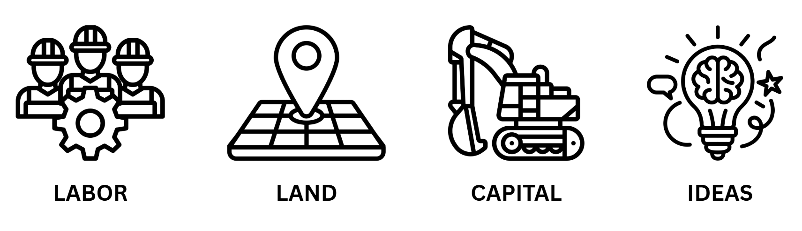
Scarcity Is Not Rarity
Rarity — absolute quantity
A pink diamond is rare. But if you do not own one, it does not touch your daily life — it forces no choices.
Scarcity — universal
Jeff Bezos has more wealth than entire nations, yet he is bound by 24 hours a day — he cannot buy a 25th. His time, energy, and attention are scarce.
So what is economics about? Addressing scarcity — allocating scarce resources to their best uses. Road space below 60th St is one of them — and in 2025 the MTA finally had to put a price on it.
So How Do We Allocate Something Scarce?
Allocative efficiency: a scarce resource ends up with whoever values it most — the right goods reach the right people, and the last unit used is worth at least what it costs society.
Markets are usually how
A price steers a scarce resource to its highest-valued use — no central planner deciding who deserves it. This is one of the most reliable ideas in economics (and Ch 10 will say exactly when it works).
The MTA's goal
Put a price on scarce road space so the trips worth most get in — the delivery on a deadline drives; the optional joyride waits. That is allocative efficiency in action.
We formalize allocative efficiency — and when markets reach it — in §6 and Ch 10. (When they fail: Ch 17. Fittingly, congestion is itself a market failure the toll is fixing.) First, the headline number.
The Nine-Dollar Question
After decades of proposals and lawsuits, the first U.S. cordon toll goes live.
The policy
Jan 5, 2025 — NYC switches on the first U.S. congestion-pricing program. Gantries below 60th St charge a peak \$9 to enter the central business district.
A toll on a good with a congestion externality. Any Principles student can draw it — effective supply shifts up \$9, and trips fall.
But drawing the direction was never the hard part.
It Needed a Number, Not a Direction
The MTA wasn't asking the direction. It needed a number: how much does traffic fall at \$9? At \$12? At \$15? Bond a \$15B capital plan against the revenue — that forces a minimum. Keep ambulances moving — another minimum. Don't enrage commuter-belt voters — a ceiling.
First-month data came fast. Graphs told the MTA the arrow. Calculus — arithmetic on real elasticities — told them where to stop.
\$9
peak toll below 60th St
~1M
fewer entries, first month
+7%
subway & bus ridership
~\$550M
first-year revenue tracking
This chapter is an extended answer to one question: how do economists get from the arrow to the number? The toll returns twice today — as Walkthrough 1.5 (the revenue arithmetic) and as a near-ideal natural experiment (§1.5) for measuring the causal traffic drop.
A Toll Is a Price — How Far Does Traffic Fall?
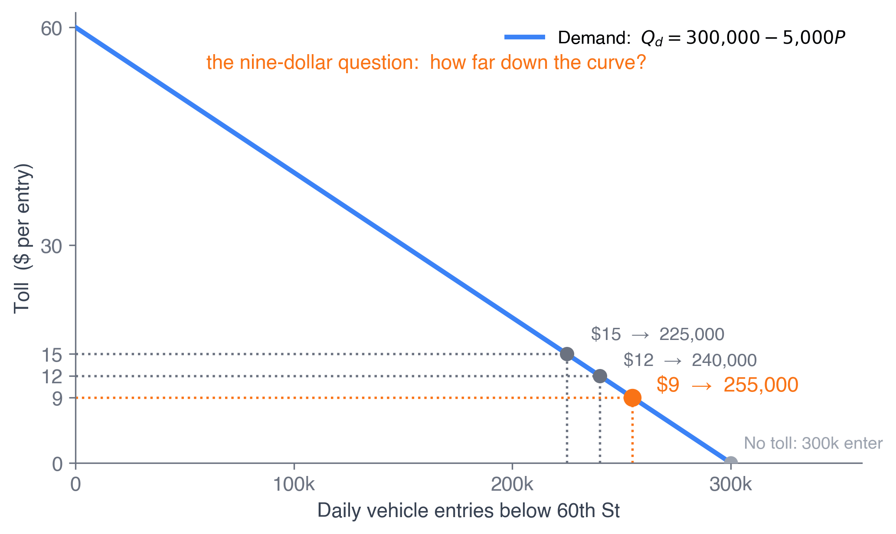
Raising the toll slides the city up its demand curve for entries. The direction is obvious to any Principles student — the MTA needed the magnitude.
At \$0, ~300,000 enter. At \$9, ~255,000 — about 45,000 fewer cars. The graph gives the arrow; a line of arithmetic gives the number.
We turn this into the toll's revenue tradeoff in Walkthrough 1.5, and drive it live in the Toll-Revenue Explorer.
§1.1
The Economic Problem
Optimization under scarcity — one template, every chapter
Specialization and the gains from trade. A deli sandwich costs a few dollars because countless specialists — wheat farmers, beekeepers, dairies, bakers, toolmakers — each do the one thing they are relatively best at, then exchange.
Markets make it possible. A market is what facilitates specialization and trade — prices and exchange let specialists who will never meet coordinate, turning specialization into a sandwich you can actually buy.
Every market in this book is machinery for coordinating that specialization. The deeper you go alone, the more the cost explodes. Those input prices run through the whole book: the wage on labor \(L\) and the rental on capital \(K\) drive cost minimization in Chs 7–9, and the wage itself returns as an equilibrium factor price in Ch 19.
The Simplified Economy: Circular-Flow Diagram
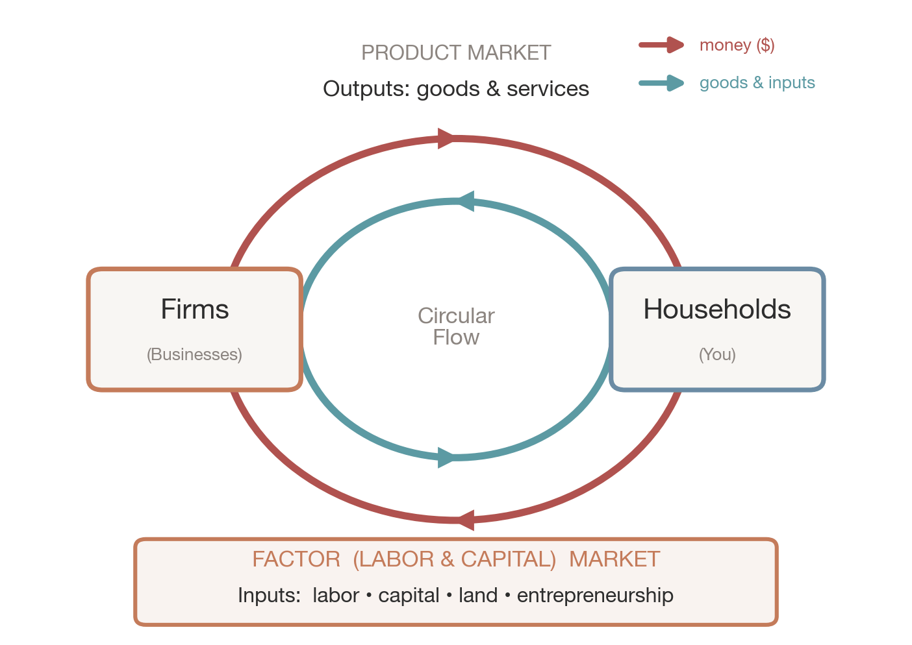
Think of something you bought today — a coffee, a bagel, a snack. You will never meet the farmer who grew the beans, the baker, or the barista. Yet it reached you.
Millions of strangers, each pursuing their own ends, coordinated by prices — with no one in charge. Adam Smith called it the invisible hand.
To make a system this big and decentralized analyzable, economists lean on a few assumptions about how agents behave.
Three Working Assumptions
Intermediate micro leans on these far harder than Principles did. Every model in the book rests on them.
1 — Agents optimize
Choose the best feasible option, not merely a good-enough one.
2 — Respond at the margin
Change a price, wage, or payoff and behavior adjusts — the adjustment is what calculus computes.
3 — Largely self-interested
Each pursues its own objective — yet prices can still coordinate them into a coherent outcome.
These are baselines, not laws of nature. Ch 18 (Behavioral) is all about where real people systematically break them.
Two Agents, the Same Problem
Consumer (you)
Wants: the most utility (satisfaction) from the bundle she buys.
Limited by: her income — the budget.
Formalized in Chapter 5.
Firm (business)
Wants: the most profit — which means producing efficiently, at least cost.
Limited by: its resources — funding, investment, inputs.
Formalized in Chapters 7–9.
Different objective, different constraint — but the identical structure: maximize something subject to a limit. One template covers both.
From Figures to Functions
In Principles we moved a line or a point on a figure to show the direction of a change. To pin down the exact magnitude — and capture how the pieces actually connect — we use a function: a machine that turns inputs into an output, written \(y = f(x)\).
weight loss
hours working out
f
pounds lost
consumer
concert ticketsramen bowls
f
happiness (utility)
producer
baristasespresso machines
f
cups of coffee
Every model in this book is a function we then optimize — the consumer maximizes utility, the firm maximizes output/profit. That is the template on the next slide.
Choose the feasible option \(x\) that makes the objective \(f(x)\) as large as possible, subject to a constraint that encodes the scarcity. Each chapter just changes the labels:
Objective \(f\)
Constraint \(g\)
Chapter
utility
budget line
Ch 5
profit
production fn
Ch 9
social welfare
pollution budget
Ch 17
Recall from 1116 — §1.1–1.2
The constraint \(g\) is the scarcity (see the opening slides). Opportunity cost is the next-best alternative forgone (explicit + implicit). In Principles we named opportunity costs in words; here we quantify the tradeoff with a number.
Application — Harvard & MIT Go Tuition-Free (2025)
From 2025–26, Harvard made tuition free under \$100K family income and waived full cost of attendance (over \$82K/yr) under \$200K. It's a textbook constrained-optimization problem:
Objective
maximize access / yield / socioeconomic diversity
Instrument
the aid schedule — expected family contribution at each income
Constraint
a finite aid budget (endowment + higher-income tuition)
Lowering the threshold raised enrollment in the \$50K–\$100K band, dropped its average family contribution to zero, and raised total outlay. Holding the budget fixed, Harvard implicitly judged the extra access worth more than the next-best use of the marginal dollar.
This is the exact decision logic we formalize in Chapter 5 with the Lagrangian — one tool for every problem of this shape, from tuition-waiver rules to a consumer's choice between coffee and rent. Optimization is not confined to firms: households, governments, and students all run it.
MIT ran the same play. In Nov 2024 it made tuition free for families under \$200K (up from \$140K) and a full ride — tuition, housing, dining, fees — under \$100K, backed by ~\$167M in need-based aid. Same objective, instrument, and constraint; different thresholds. [MIT News]
Walkthrough 1.1 — A Student's Time Budget
Problem. Maya splits 97 free hours between study \(S\) and paid work \(W\) at \$18/hr. Study's value falls in blocks: \$30/hr (hrs 1–10), \$20 (11–20), \$15 (21–30), \$0 after. How should she split the 97 hours?
Solve it in steps:
1. List each study block's marginal value (MV).
2. Compare each block to the flat \$18 wage.
3. Give each hour to whichever pays more at the margin — study while MV beats the wage.
Study block
MV/hr
vs \$18 wage
1–10
\$30
study
11–20
\$20
study
21–30
\$15
work
31+
\$0
work
Study beats the wage through hour 20; at hour 21 its value drops below \$18.
Walkthrough 1.1 — Solution
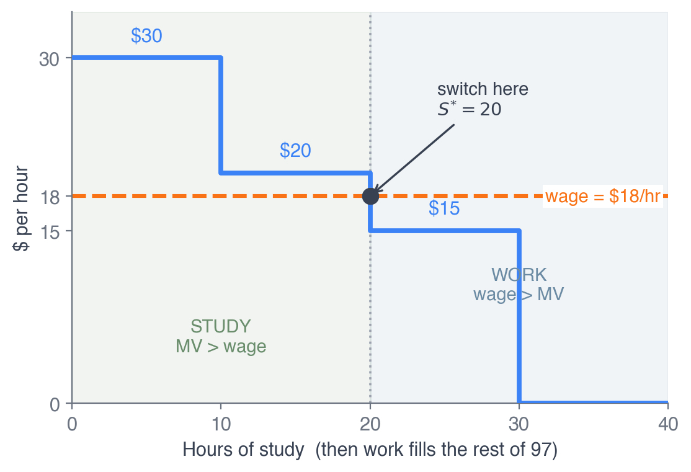
Study wins through hour 20 (\$20 > \$18); at hour 21 it drops to \$15 < \$18 — the crossover.
The last hour of study is worth as much as the last hour of work — this compare-at-the-margin, stop-at-the-crossover rule is the marginal thinking we formalize in §3. Raise the wage to \$25 and the switch flips to hour 11 — higher wages crowd out studying. In Ch 5 we swap the step function for a smooth utility function and solve the same problem with the Lagrangian. Maya recurs in Chs 5, 6, and 19.
§1.2
Equilibrium
When does the system rest? — mutual best response, not stillness
Market Equilibrium
Equilibrium is the price \(P^{*}\) where quantity demanded equals quantity supplied: \(Q^{d}=Q^{s}\). The market clears — no one wants to change.
Above \(P^{*}\): surplus. \(Q^{s}>Q^{d}\) — unsold stock piles up, so sellers cut the price.
Below \(P^{*}\): shortage. \(Q^{d}>Q^{s}\) — buyers compete, so the price gets bid up.
Both forces point back to \(E\) — the self-correction that makes \(E\) a rest point, the "mutual best-response" we unpack next.
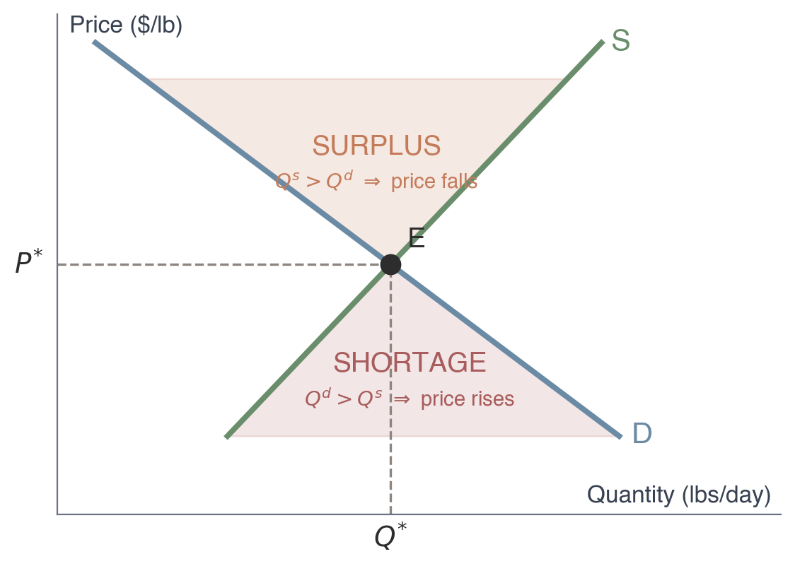
Equilibrium Is a Mutual Best Response
Wrong intuition
"Equilibrium" = a system at rest because nothing is happening.
Right intuition
Each agent's action is already the optimal response to every other's. No one wants to change. Shock it → agents re-optimize → a new mutual best-response.
The interesting questions
Which way does the system move? How fast does it return?
Data: the price spike — Jan 2025 dozen hit \$4.95, +96% YoY
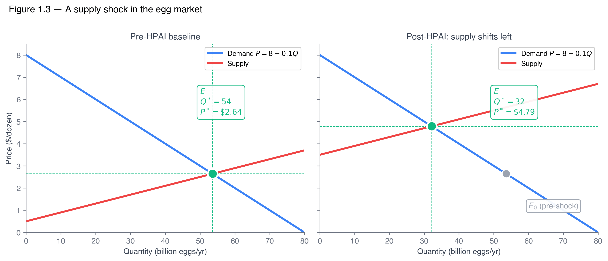
Theory: supply shifts in — steep demand ⇒ big price, small quantity move
Information Is the Key
When markets are large and information is transparent, even self-interested individuals can produce socially efficient outcomes — and when it isn't, they don't.
The Movie Theater — it works
Roughly equal lines — nobody is in charge.
Self-interest: minimize my own wait time.
Information:full — I see every line at a glance.
Result: each person picking the shortest line yields the shortest collective wait. The invisible hand works.
The Traffic Jam — it fails
Lane-changing — can't see what's beyond the car ahead.
Self-interest: get ahead of the car ahead of me.
Information:incomplete — I can't see the system-level jam I'm causing.
Result: the same rational behavior worsens the jam — everyone slower. The invisible hand fails.
Same self-interest. Same rationality. Different information → different outcome. Markets need good information to clear efficiently — Part V (Chs 15–18) is the theory of when they don't.
Surge Pricing = Equilibrium in Real Time
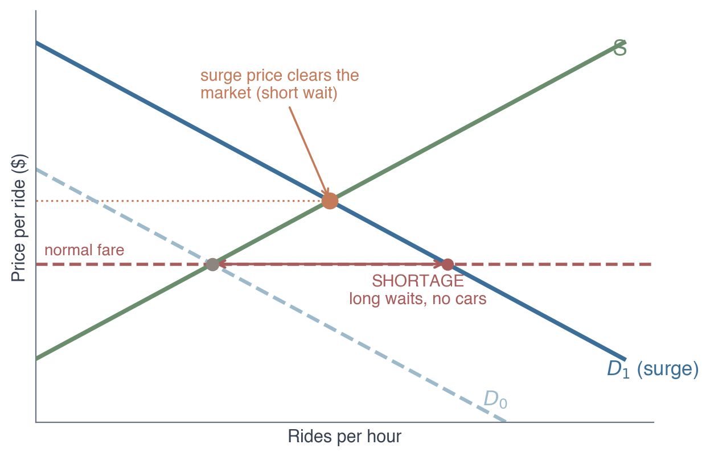
A rainstorm hits; a concert lets out. Demand spikes. Uber's surge multiplier lifts the price until riders willing to pay match drivers willing to drive — the market clears.
More efficient: shorter wait, cars actually show up.
Less "fair": riders pay a higher fare.
Equilibrium only clears the market
It tells us the price that makes quantity demanded meet quantity supplied — not whether that price is fair or "right." That is a normative question. (Modeled in Ch 2; as price discrimination in Ch 12.)
Theory and Data — Does Surge Pricing Actually Work?
Two natural experiments from Uber's own data: the same model, tested against reality.
Surge OFF → the system breaks
New Year's Eve, NYC (Dec 31, 2014). A glitch left surge pricing off for a stretch. With the fare stuck at its normal level, riders far outnumbered available drivers — completion rates collapsed and waits spiked. A textbook shortage.
Surge ON → the system works
Ariana Grande concert, MSG (Mar 21, 2015). As the crowd poured out, surge kicked in. The higher fare drew more drivers and rationed rides to those who valued them most — completion rates held near 100 percent. The market kept clearing.
The model's prediction, in Uber's own data: let the price rise → the market clears; freeze it → shortage. That is an efficiency result — it still says nothing about whether the surge fare is fair.
Source: Hall, Kendrick & Nosko, "The Effects of Uber's Surge Pricing: A Case Study" (2015); covered in The Economist, "A fare shake" (May 14, 2016).
Walkthrough 1.2 — The Egg Shock by the Numbers (a preview)
Setup. Demand \(Q_d=200-5P\), supply \(Q_s=50+10P\) (millions of dozens/wk). Avian flu shifts supply inward by 30 at every price: \(\tilde Q_s=20+10P\).
Graphs already give the direction: price up, quantity down. The question this book cares about is the magnitude.
The answer: equilibrium moves \((P,Q)=(10,150) \to (12,140)\). Supply shifted in by 30 — yet \(Q\) fell only 10.
The whole 2025 story in one gap
Steep (inelastic) demand absorbs the shock as a higher price, not a lower quantity — so "−30 of supply" shows up as only "−10 of quantity."
Solved from scratch in Ch 2 (W2.1–2.2); the elasticity ratio behind the split comes in Ch 3.
Heads Up 1.2 — equilibrium is not the outcome you'd want
If eggs cleared at \$5, that does not make \$5 the "right" price. Equilibrium means the market cleared — a positive fact. Whether \$5 is fair or efficient is a separate, normative question (Ch 10: when competition is efficient; Ch 17: when it isn't). Confusing the two is a reliable way to get a policy question wrong.
Poll #1 — Did the Market Get the "Right" Price?
The egg market cleared at about \$5 a dozen during the avian-flu shock. Is \$5 the "right" price?
A) Yes — a market price is always the efficient price
B) No — "cleared" is a positive fact; "right" is a separate normative question
C) No — \$5 is too high, so it can't be a real equilibrium
D) Only if buyers and sellers both like the price
45 sec to vote
Answer: B — Positive ≠ Normative
"The market cleared" describes what happened. Whether the outcome is fair or efficient is a value-laden question that needs welfare analysis — efficient under perfect competition (Ch 10), inefficient under externalities (Ch 17).
Trap A: the welfare theorem (competitive equilibrium maximizes surplus) is a result with conditions, not a definition. Spillovers, market power, or missing markets break it.
Comparative Statics — Comparing Two Equilibria
We rarely care about one equilibrium in isolation. The useful question is almost always: how does the equilibrium move when something changes — a shock, a tax, a new technology? Comparing the old equilibrium with the new one is called comparative statics, and it is the engine of nearly every problem in this book.
Comparative statics in one line: \((10,150) \to (12,140)\). The graph gives the direction (price up, quantity down); to report the magnitude of each move — and compare them — we need percentage change.
A change matters only relative to where it started: \$2 from \$10 is a lot; \$2 from \$100 is not. (A percentage change is just that ratio, times 100.)
Sign
\(\%\Delta > 0\) a rise · \(\%\Delta < 0\) a fall · \(\%\Delta = 0\) no change.
Building block of elasticity: \(\;\varepsilon_D = \dfrac{\%\Delta Q}{\%\Delta P} = \dfrac{-6.7\%}{+20\%} \approx -0.33\) — steep, inelastic demand absorbs the shock as price, not quantity. We formalize this in Chapter 3.
§1.3
Marginal Thinking
Why we need calculus — the marginal is the derivative
How Do People Make Decisions?
Economists have a simple answer: people compare the additional benefits and additional costs of an action.
Economists use the word “marginal” to mean one additional.
Rational people take an action if and only if the marginal benefit outweighs the marginal cost.
Go
Marginal Benefit > Marginal Cost
→ take the action
Stop
Marginal Cost > Marginal Benefit
→ don't
The Logic of the Snooze Button
Each day you're tempted to sleep in instead of attending your morning class. How do you decide?
Marginal analysis
Not the total enjoyment of sleep vs the total value of class — it's the benefit of one more morning of sleep (which falls) versus the cost of missing one more class (which rises).
You stop when the cost of one more action outweighs its benefit — the same logic whether you're a student sleeping in or a firm hiring one more worker.
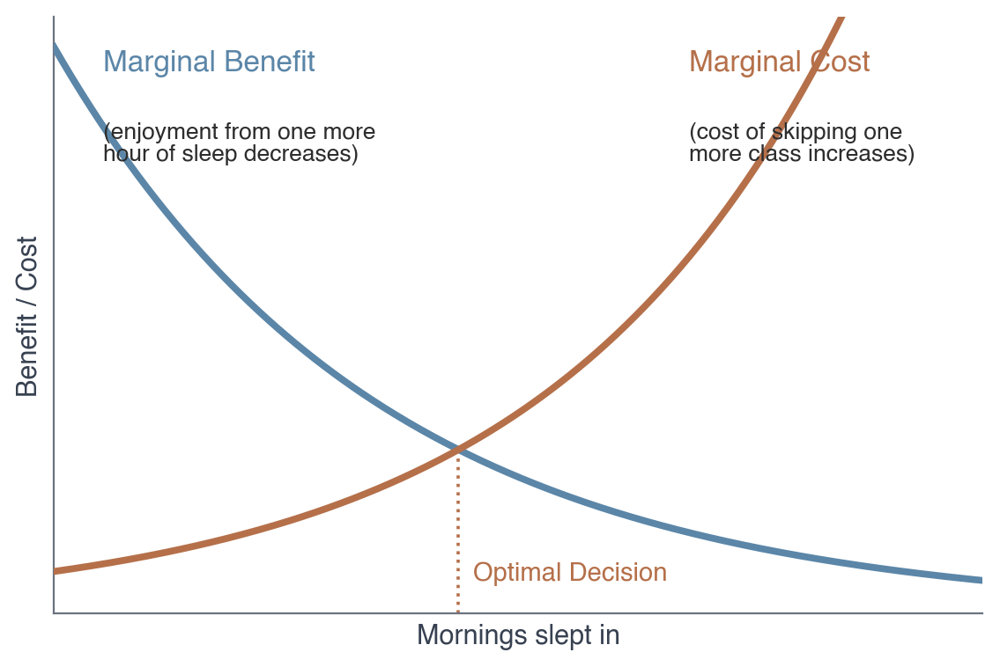
First, the Simple Case: A Straight Line
Suppose weight loss were linear — the same pounds lost every hour. The slope is constant: rise / run \(= 2/4 = 0.5\) lb per hour.
Why it's tempting
One number describes the whole relationship — no calculus needed.
Why it's not realistic
It never slows down: 100 hrs → 50 lbs, 1,000 hrs → 500 lbs. Real bodies hit diminishing returns and plateau — so the line bends into a curve.
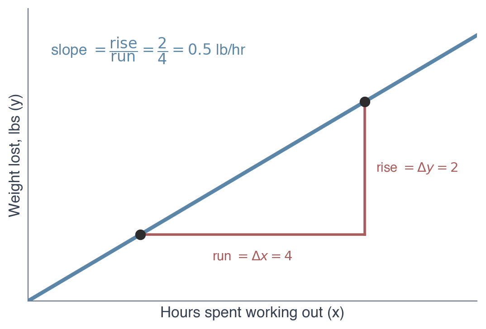
The Realistic Case: Slope That Changes
A real curve bends, so its slope differs at every point. A derivative is that slope at a single point — the rate of change right there.
Diminishing returns: steep early (slope ≈ 1), nearly flat later (slope ≈ 0) — no single number works.
Notation
Weight lost \(= f(\text{hours})\), i.e. \(y = f(x)\). Its derivative — how a change in \(x\) affects \(y\) — is written \(\dfrac{df(x)}{dx}\) or \(f'(x)\).
Calculus Corner 1.1 — First-Order Conditions
At any interior optimum of a smooth \(f\): \[ f'(x^{*}) = 0 \]
At the top of a smooth hill the tangent is flat. If \(f'(x^{*})>0\), move right and \(f\) rises; if \(f'(x^{*})<0\), move left — so the slope must be zero. The SOC sorts max from min: \(f''(x^{*})\le 0\) for a maximum.
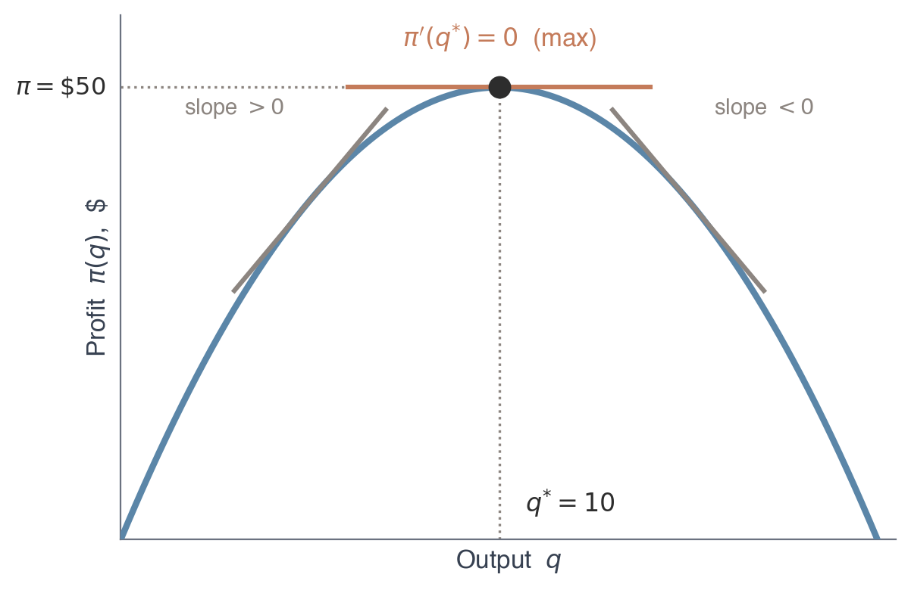
Worked example — maximize \(\pi(q)=10q-0.5q^{2}\)
FOC \(\pi'(q)=10-q=0 \Rightarrow q^{*}=10\)
SOC \(\pi''(q)=-1<0\) ✓ (max)
Profit \(\pi(10)=\$50\)
Forgot how to take a derivative? Press ↓ for the toolkit — constant, power rule, and sums cover nearly everything we use.
At the peak \(AR=10\) but \(MR=0\). A firm watching \(AR\) alone thinks "still earning \$10/unit — sell more." Wrong: the next unit earns nothing at the margin.
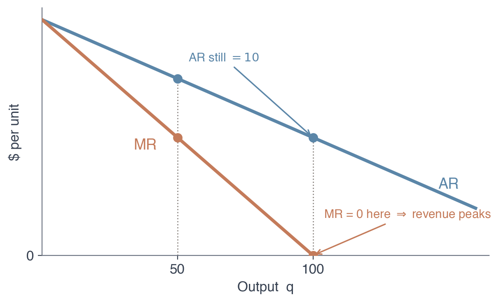
The Marginal Is the Slope of the Tangent
Marginal cost of the \(q\)th unit \(\approx C(q)-C(q-1)\) — the slope of a secant. Shrink its span to zero and the secant becomes the tangent:
\[ MC(q) = \frac{dC(q)}{dq} \]
Harmless formula, big consequences. "Where should the firm stop?" becomes "where is \(\frac{dR}{dq}-\frac{dC}{dq}=0\)?" — a one-line solve that in Principles needed a hand-drawn diagram or an exhaustive table.
The same first-order logic runs the rest of the book: \(p = MC\) in Ch 9, \(MR = MC\) in Ch 11, and \(f'(x^{*}) = 0\) (the FOC) in every optimization from Ch 5 on.
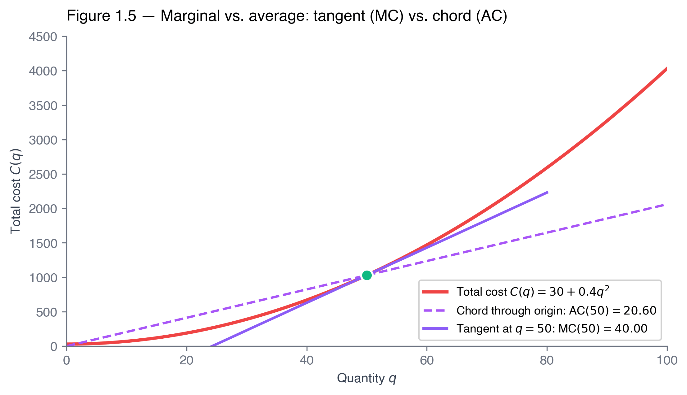
Recall from 1116 — §1.3
A marginal quantity is the change in a total from one more unit — compared in discrete one-unit steps in Principles. Here it is almost always a derivative: if total benefit is \(B(q)\), marginal benefit is \(MB(q)=dB/dq\). Cleaner algebraically, sharper intuitively.
Walkthrough 1.4 — Netflix's Ad-Tier Price Hike
Problem. 80M ad-tier subs at \$7.99/mo. A \$1 hike to \$8.99 causes 2% to churn over the year. Net change in annual subscription revenue (ignore ads)?
Netflix's 2% churn is far below it — the hike clearly pays.
The decision isn't "raise prices?" (direction obvious) but how much — marginal revenue from each \$1 vs marginal churn loss. That tradeoff, in the limit, defines the monopolist's optimal price in Chapter 11.
Heads Up 1.3 — Marginal Is Not Average
Exam trap. A firm has total revenue \(\$1{,}000\) and total cost \(\$800\) at \(q=100\). Should it produce the 101st unit?
\(\Rightarrow\) \(+\$2\) profit per unit on average. Tempting: "still earning — expand."
At the margin → "contract."
\(MR(100)=\$4\) \(MC(100)=\$5\)
\(\Rightarrow\) the 101st unit nets \(4-5=-\$1\). It loses money.
Same firm: the average looks great (\(+\$2\)/unit) yet the next unit loses \(\$1\). The average tells you about history; the margin tells you about the next decision. Whenever you see "average" in a problem, ask whether you actually want the marginal.
§1.4
Models
Simplified maps of complex worlds — useful because they leave things out
The Problem of Infinite Complexity
Reality is billions of daily decisions and countless interacting, chaotic variables — no one can measure them all at once.
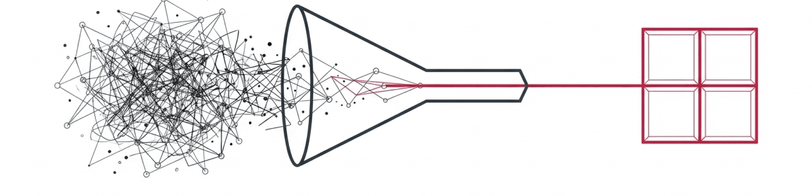
To make any of it tractable, economists look at the world through models — deliberately simplified maps that keep only what matters for the question at hand.
Deciding What to Leave Out
How do economists decide which details to strip away? They use assumptions — a filter that removes irrelevant noise so the underlying mechanics of a system become visible.
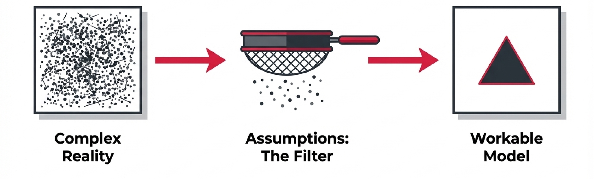
An assumption isn't a claim that the world is simple — it's a choice about what to ignore so the forces you care about stand out. Test one by asking whether relaxing it would change your answer, not whether it's "realistic."
A Model Is a Subway Map, Not a Photograph
The photo is more realistic; the map is more useful for navigating.
A good model picks the actors and their objectives, the environment (fixed / variable / random / strategic), and — hardest — what to ignore. We then do comparative statics: how does the equilibrium shift when a parameter changes?
Recall from 1116 — §2.2
A positive statement is about what is (testable); a normative one is about what ought to be (value-laden). Economics is mostly positive analysis in service of normative questions.
Heads Up 1.4 — models are tools, not portraits
Don't ask "is this assumption true?" (almost none are) — ask "would relaxing it change the result I care about?" Chs 11–18 exist to relax the perfect-competition assumptions, one at a time.
§1.5
The Empirical Turn
How economists test theories — from the arrow to a measured number
Why Two Things Move Together
Correlation
Two variables move together — positive, negative, or zero. A pattern in the data.
Causation
One variable directly produces a change in the other. Rule out the alternatives below.
If \(X\) and \(Y\) correlate, there are three suspects:
X → Y
More teachers per student cause higher test scores
Y → X
Reverse: high-scoring districts attract & fund more teachers
Z → X, Y
Omitted variable: district income drives both
Spurious correlations — high \(r\), zero meaning
Margarine consumption ↔ Maine's divorce rate (\(r=0.99\)); websites online ↔ wind-power capacity (\(r=0.98\)). Both just share a time trend. An algorithm flags these as "significant"; a trained economist asks what is the omitted \(Z\)?
When \(X\) and \(Y\) move together, the data alone can't tell you which story is true. Three very different worlds produce the same scatter:
Real causation — \(X\) genuinely drives \(Y\). The sun melts the ice cream.
Hidden common cause — a third variable \(Z\) drives both. Rain brings out umbrellas and boots; neither causes the other.
Coincidence — no link at all, just chance or a shared time trend. A cactus and a telephone.
A correlation coefficient can't tell these apart — only a research design can.
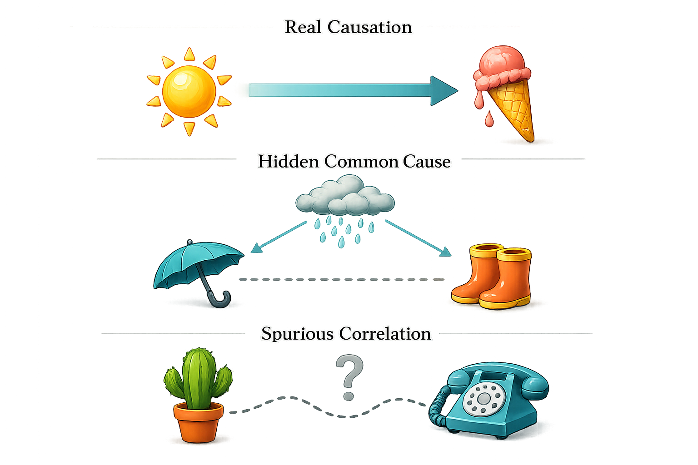
Correlation, Causation, and the Counterfactual
Modern micro is saturated with empirical work — RCTs, natural experiments, administrative data, DiD, regression discontinuity. The "credibility revolution" is ~three decades old.
The core problem is causal inference: does \(X\) cause \(Y\), or do they merely move together? States with more teachers/student also have higher scores — but they also differ in income, demographics, curricula. Any of those could be doing the work.
The counterfactual. The causal effect of \(X\) on a unit is \(Y\) with \(X\) minus \(Y\) without \(X\), holding all else fixed. The fundamental problem: only one of those is ever observed for the same unit. Every empirical design is a strategy to estimate the missing one.
Heads Up 1.5 — "correlation is not causation"
Everyone's heard it; almost everyone slips on the exam. When you see "\(X\) is associated with \(Y\)," ask: what is the counterfactual, and how was it constructed?
Causal Inference
How Economists Test Ideas
Three tools for a credible counterfactual — randomized experiments, A/B tests, and natural experiments
Taking the Model Out of the Classroom
We’ve established how to build economic models and why omitted variables distort reality. Now we turn to the tools economists use to test these ideas in the real world.
Step 1
Models & Assumptions
→
Step 2
Correlation vs. Causation
→
Step 3 · now
Testing in Reality
Two Ways to Establish Causation
Both strategies do the same job — build a credible counterfactual, the outcome that would have occurred without \(X\):
Gold Standard
Randomized Controlled Trial
Randomly assign people to treatment or control. Any later difference is a causal effect. Ex: Bloom’s remote-work RCT at Trip.com.
Next Best
Natural Experiment
An external event — a law, a border, a lottery — splits people into near-random groups no one designed. Ex: Card & Krueger’s NJ-vs-PA minimum wage.
The credibility revolution: Card, Angrist & Imbens shared the 2021 Nobel for these methods. Modern micro went from theory-only to evidence-first.
The Gold Standard: Randomized Controlled Trials
Split one group at random into treatment and control. Randomization neutralizes every hidden \(Z\) — motivation, background, ability — so the only systematic difference left is the treatment itself.
Because the two arms start statistically identical, the outcome gap (here, +0.3 GPA) is the causal effect — there is no confounding left to explain it away.
A/B Testing: Causal Inference at Scale
Tech firms run RCTs on millions of users at once. Random assignment to version A vs. B reveals what causes clicks, retention, and revenue.
Netflix
Thumbnail A/B tests → +20–30% click-through. Sequential testing flags winners in real time.
Amazon
150+ economists led by Pat Bajari. Every checkout button, ranking algorithm, and price runs through A/B tests before launch.
Airbnb
Peter Coles uses ML counterfactuals to handle selection bias when full randomization isn’t possible.
Uber
Surge-pricing experiments isolated the causal effect: surge ON → 2.6 min wait; surge OFF (NYE outage) → 8 min wait, 25% unfulfilled.
A/B testing makes the credibility revolution continuous and corporate. Every click on Netflix or Amazon is part of someone’s experiment.
When You Can’t Randomize: Natural Experiments
You can’t randomly assign minimum wages, school reforms, or health insurance. Instead, find a natural experiment: an event — a law, a border, a policy date — that sorts people into treatment and control by nature, not by design.
When the ACA let each state choose whether to expand Medicaid, it created a ready-made treatment (blue) and control (gray) map — a laboratory no economist had to build.
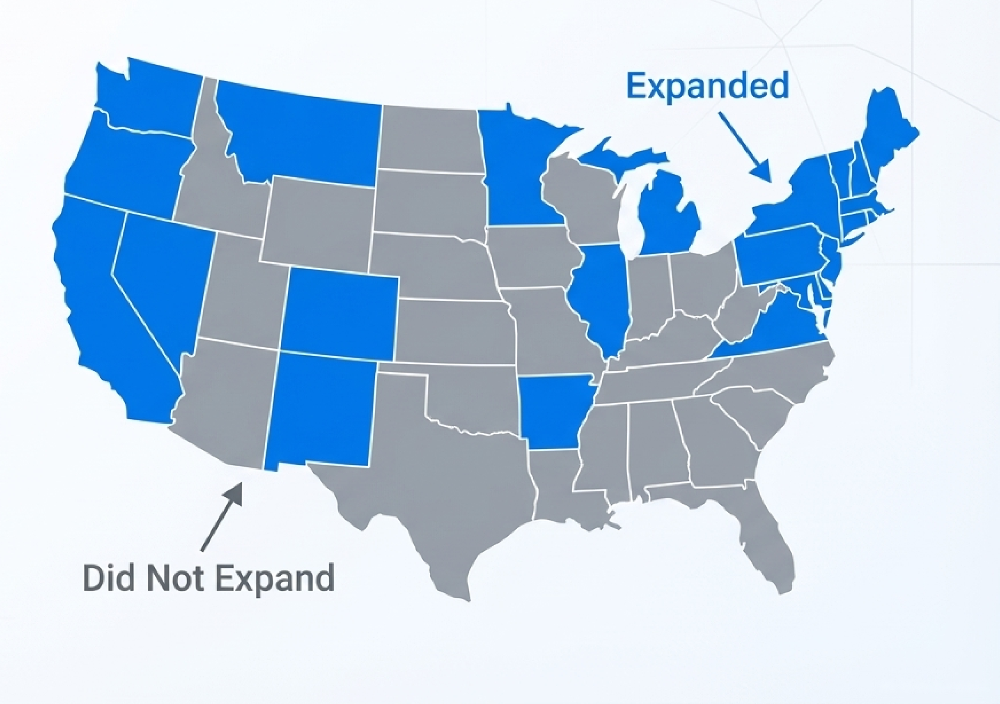
Difference-in-Differences: Card & Krueger
In 1992 New Jersey raised its minimum wage; neighboring Pennsylvania did not. You can’t compare NJ before vs after (the whole economy drifts), nor NJ vs PA directly (different baselines). So take the difference of the differences: NJ’s change minus PA’s change over the same window.
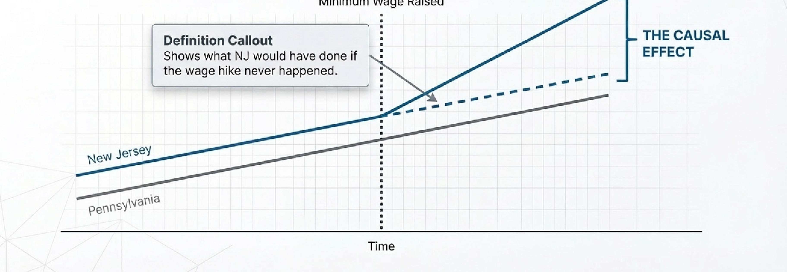
The dashed line is the counterfactual — what NJ would have done had it tracked PA. The gap to actual NJ is the causal effect of the hike. Famously, employment did not fall.
Theory & Data — A Guaranteed-Income RCT
Background: the largest privately funded guaranteed-income trial in the U.S. — bankrolled by OpenResearch (founded by Sam Altman) and run across Texas and Illinois (2020–2023) to ask whether unconditional cash makes people stop working.
An RCT builds the counterfactual on purpose: randomize who gets \(X\), so treatment and control differ only in \(X\). Vivalt et al. (2024, NBER WP 32719) enrolled 3,000 low-income adults; 1,000 got \$1,000/mo for 3 years, 2,000 got \$50/mo.
−1.3h
weekly work, treated vs control
−\$1,500
earnings/yr (« the \$12K transfer)
Random assignment lets us read the 1.3-hour gap as a causal effect of the cash, not a correlation about who happens to receive it.
Forward pointer — Ch 5
This is the direct empirical counterpart to a theory result we derive in Ch 5: a rise in non-labor income reduces labor supply when leisure is a normal good. Theory predicts the sign; the RCT measures the size.
Theory & Data — Generative AI at Work (Natural Experiment)
RCTs are often impossible — no researcher can randomly decide which workers get a new AI tool, or when it arrives. Instead, exploit a natural experiment with difference-in-differences: compare the change in \(Y\) for a treated group to the change for a control, over the same window (assuming parallel trends).
Brynjolfsson, Li & Raymond (2023, NBER WP 31161): staggered rollout of an AI assistant to 5,172 support agents. Productivity rose ~15% — and least-experienced agents gained most.
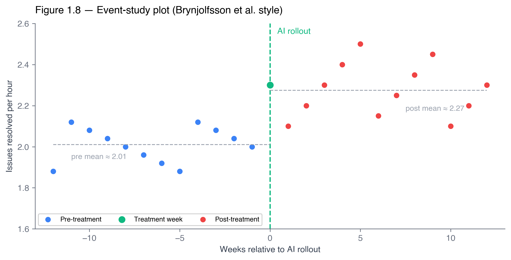
The pre-period flatness validates parallel trends; the post-period jump is the treatment effect. This is what a causal estimate looks like in a natural experiment — the average 15% is the causal effect; the distributional detail (novices gain most) is the interesting discovery.
Application — Congestion Pricing as a Natural Experiment
Back to the \$9 toll — a near-ideal natural experiment: switched on at a precise time, on a precise boundary (below 60th St), with heavy before/after data.
Compare the zone after Jan 2025 to (a) Manhattan above 60th St (geographic control) and (b) the zone before Jan 2025 (time control). The difference of those differences is a causal estimate of the toll's effect.
~1M
fewer entries, month 1
+51%
Holland Tunnel speed
The load-bearing clause
These are causal effects only if parallel trends holds — nothing else systematically changed for the zone but not the rest of the city at exactly that moment. Defending that clause is the real work, from Ch 2 on.
Walkthrough 1.5 — The MTA's Revenue Arithmetic
Problem. Daily entries \(Q_d(P)=300{,}000-5{,}000P\). (a) Revenue at \(P=9\) and \(P=12\)? (b) Revenue-maximizing toll? (c) Why might the MTA pick below it?
(a) Revenue at \$9 and \$12. \(R(9)=9(255{,}000)=\$2.295\)M; \(R(12)=12(240{,}000)=\$2.88\)M per weekday.
(c) Why pick below it? At \$30, entries halve to 150,000 — crowding, disruption, equity, and political backlash. The MTA solves a constrained problem, not pure revenue.
Graph → arrow. Calculus → number.
A diagram says revenue first rises then falls in the toll. The FOC pins the peak exactly at \(P^{*}=\$30\). We redo this in Ch 3 with elasticity — revenue is maximized where \(\varepsilon_D=-1\).
Real policymakers rarely maximize one thing. The gap between "the math says \$30" and "they chose \$9" is the space between a simple model's prediction and the multi-objective problem policymakers actually run.
Walkthrough 1.5 found the revenue-maximizing toll is \$30, yet the MTA set \$9. What's the best explanation?
A) The MTA made an arithmetic mistake
B) \$9 optimizes a different, constrained objective (revenue target + traffic + politics)
C) Demand is perfectly inelastic at \$9
D) A \$30 toll would violate the law of demand
45 sec to vote
Answer: B — A Different, Constrained Objective
\$30 is the answer to "maximize revenue." The MTA solves a harder problem: hit a bonding target and a traffic floor without a political revolt. \$9 is that problem's optimum — the gap between the two is the whole lesson of the chapter.
The takeaway: a simple model gives a sharp number for a simple objective. Real policy adds constraints — and the constrained optimum is a different number. Both are "optimization."
Chs 15–18: risk, information, externalities, behavior. The \$9 toll.
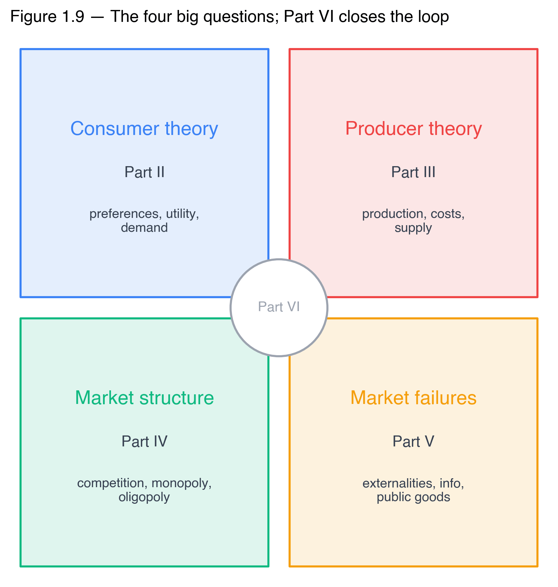
Part VI (Ch 19) closes the loop: Maya opened Ch 1 choosing hours of work; Ch 19 closes the book with Maya's wage as an equilibrium price — firms' derived demand meeting workers' supply. One toolkit, applied to the market that prices her own labor.
One Word Runs Through All Four Parts: Efficiency
Economists mean two distinct things by it.
Productive efficiency
A given output made at the lowest resource cost — no inputs wasted.
Firm-side half · Chs 7–10
Allocative efficiency
The right goods for the right people — the last unit is worth at least its social cost.
First met in Chs 2–3 (consumer & producer surplus) · Ch 10 welfare theorem ✓ · Chs 11 & 17 break it
Every deadweight loss in this book is a measurement of allocative inefficiency.
Market Failure #1 — Market Power
When a seller faces no real competition, price floats free of cost.
Gorda, CA — one gas station on a remote stretch of Highway 1. Regular: $9.30/gal, ~$2 above stations down the coast.
No rival station for miles — so the seller is not a price taker. It restricts what's available and sets price far above cost. Reviews call it "straight up price gouging"; economists call it market power.
It doesn't take a remote road.DOJ v. RealPage (2025): landlords fed private data into a shared pricing algorithm that recommended coordinated rent hikes — a "technological cartel," collusion without anyone meeting in a conference room.
Either way, price is pushed above the competitive level. Willing buyers get priced out, surplus-creating trades never happen — and that gap is the deadweight loss. Full treatment: Chapter 11.
Market Failure #2 — Incomplete Information
When buyers can't tell good from bad, the good can get driven out.
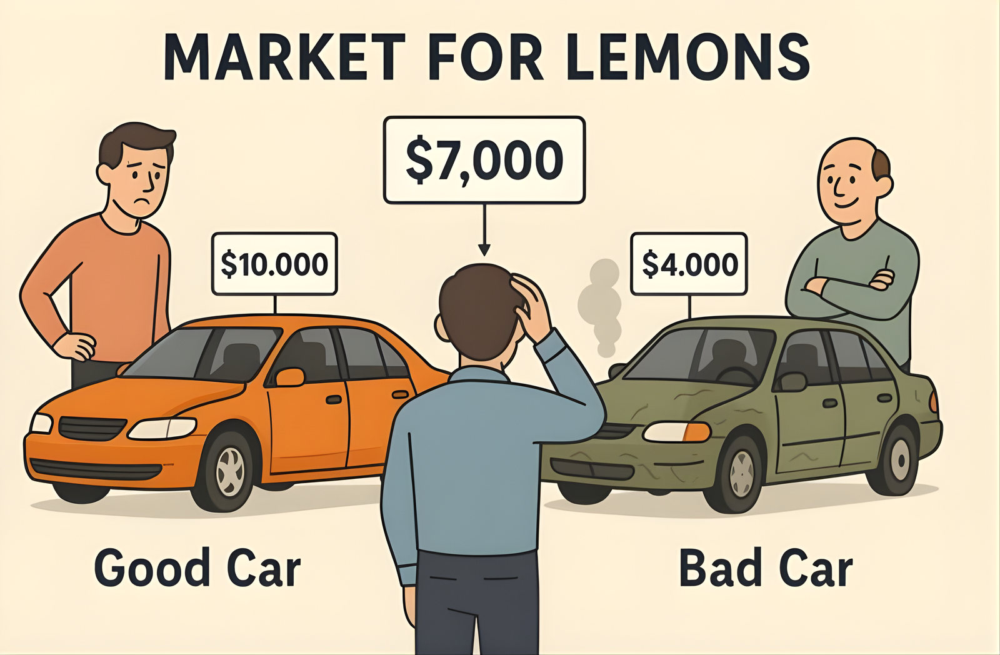
George Akerlof's "Market for Lemons" — the buyer can't tell which is which.
A good used car is worth $10,000, a lemon $4,000. The buyer can't tell them apart — so they offer the average, ~$7,000.
But $7,000 is a steal for a lemon and an insult for a good car. Good-car owners stop selling — so the buyer's offer falls further — so more good cars leave. The market for the good thing can unravel.
The fix is signaling: CARFAX reports, warranties, certified pre-owned. 2025 version: "AI slop" floods the web and users can't tell human from synthetic — so "verification" (blue checks) becomes an economic necessity, not vanity. Full treatment: Part V.
Market Failure #3 — Incomplete Information, 2025
The Market for Lemons, now running on the whole internet.
The theory: George Akerlof proved that when buyers can't distinguish quality, the market can collapse — the same lemons logic as the used cars.
The 2025 application: "AI slop" floods the web. Readers can't tell a human from a synthetic — so trust in everything falls, and good content gets buried with the bad.
The solution is still signaling. "Verification" — a blue check — stops being vanity and becomes an economic necessity: a credible way to signal authenticity in a low-trust market.
Market Failure #4 — Externalities
When the price ignores a cost borne by third parties — "the cloud is heavy."
An externality is a cost (or benefit) the price leaves out — so the market over- or under-produces. Today's vivid case: the energy bill behind AI.
Energy. Data centers ≈ 4% of US electricity — on track to double by 2030.
Intensity. One AI query ≈ 10× the energy of a Google search.
The fix — make the firm pay the social cost. A compute tax, or clean-power mandates (e.g., the Three Mile Island restart) that internalize the externality. Full treatment: Part V.
Market Failure #5 — Public Goods
Some goods everyone benefits from — and no one will pay for alone.
Boston Common — America's oldest public park, city-owned since 1634.
A public good is non-excludable (you can't keep non-payers out) and non-rival (one person's use doesn't use it up). Boston Common is both — anyone may walk in, and the green doesn't run out when you do.
The free-rider problem: if you'll get the park whether you chip in or not, why pay? Everyone reasons the same way — so a private market underprovides public goods, or never builds them at all.
The fix: the government provides them, funded by taxes — no opt-out, no free-riding. Parks, national defense, clean air, basic research. Full treatment: Part V.
The Efficiency–Equity Tradeoff
Bigger pie
A lighter tax, a freer market — often enlarges total surplus but slices it less equally.
Fairer slices
A minimum wage, a progressive tax — shares the pie more evenly but can shrink it.
The same tension, in the chapters you’ll cover:
Ch 2–3
Rent control
Tenants pay less now (fairer) — but shortages & deadweight loss (smaller pie).
Ch 3
Minimum wage
Lifts low-wage pay (fairer) — but can price the least-skilled out of work (smaller pie).
Ch 10
Competitive market
Maximizes total surplus (biggest pie) — but who gets what is set by endowments, not need.
Ch 11
Monopoly & patents
Patents reward innovation (future pie) — but above-cost prices lock buyers out (DWL today).
Positive analysis sizes the tradeoff at each point. It cannot pick a point — that depends on values.
We meet it at tax incidence (Ch 3), the welfare theorem (Ch 10), the environment (Ch 17), and income distribution (Ch 19).
Chapter 1 in a Nutshell
1. Scarcity → choice → optimization. Every chapter is \(\max f(x)\) s.t. \(g(x)\le 0\) — only the labels change.
2. Graphs give the arrow; calculus gives the number. Intermediate micro is mostly about the magnitude.
3. Marginal thinking. The marginal is the derivative; the optimum is the first-order condition \(f'(x^{*})=0\).
4. Models are purposeful simplifications. Judge by what they help you see; ask if a relaxed assumption changes the result.
5. Modern micro is empirical. RCTs and natural experiments estimate causal effects, not just qualitative signs.
6. Positive ≠ normative. "The market cleared" is a fact; "the price is right" is a value judgment. Keep them apart.
End of Chapter 1 • Opens Part I
Questions?
Next — Ch 2: Supply, Demand, and Market Equilibrium, where we solve the equilibrium algebraically and measure surplus as an integral